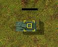

|
Home
|
Contains all the images for vehicles. There are a lot of images in each file to allow the vehicles to roll and pitch as they move up and down hills. In my opinion the effect is not really noticed and good easily be dropped by the game.
Vehicle graphic files are only found by extracting the images from the tanks.zfx file. See the zfx tool and the ZFX file format for more details on these files.
There are always 17 images in each vehicle file. Each of the images shows the vehicle/turret at a different pitch and roll.
image description
0 flat and level
1 unknown
2 unknown
3 unknown
4 unknown
5 unknown
6 unknown
7 unknown
8 unknown
9 unknown
10 unknown
11 unknown
12 unknown
13 unknown
14 unknown
15 unknown
16 unknown
17 unknown
My guesses as to what the images relate to are:
Now can somebody look at all the images and figure out which ones are for what graphic.
If you want to add a new vehicle graphic for now all I would do is just copy the flat and level graphic to the other 16 slots. You really can't notice the tilt and roll that much.
Extensions are in the form: .(n|z)(n|s)(t|h)
The first byte in the file is the file type.
This table indicates what the file type should be for the extension of the file (or vice versa, what the extension should be for a given file type).
.ext type description .nnh 0 normal N hull .nnt 1 normal N turret .nsh 2 normal S hull .nst 3 normal S turret .znh 4 zoomed N hull .znt 5 zoomed N turret .zsh 6 zoomed S hull .zst 7 zoomed S turret
offset size type name description
0 4 int filetype each extension has a unique type, see above
4 4 int imageDataSize length in bytes of all image data (filesize-484)
8 272 int[17][4] pointTable each image has 2 pointss (x,y) for lining up turret and shadow
280 136 int[17][2] sizeTable w,h in pixels for each image
396 68 int[17] offsetTable offset from start of image data (image data always starts at offset 484)
} NntHeader;
Image data is stored as 16 bit pixels (0rrrrggggbbbb). See Pixel Format
below for some simple C code that you can use to pack/unpack these pixels.The hotpoint is used to align the turret, hull and shadow. Here is what happens when you don't do this correctly.

// PIXEL FORMAT // // Artwork is stored as 16 bit graphics. Each component of the pixel is // made up of red, green and blue. Components have a value between 0 and 31 // // typedef unsigned short CC3PIXEL; // builds a CC3PIXEL from r,g,b where r,g,b are in the range 0..255 #define CC3PIXEL_RGB255(r255,g255,b255) (CC3PIXEL)(((r255 >> 3) << 10) | ((g255 >> 3) << 5) | ((b255 >> 3))) // breaks the CC3PIXEL into red,green,blue componentes (values will be 0..31) #define CC3PIXEL_R(cc3pixel) ((cc3pixel>>10)&0x1f) #define CC3PIXEL_G(cc3pixel) ((cc3pixel>>5 )&0x1f) #define CC3PIXEL_B(cc3pixel) ((cc3pixel )&0x1f) // same as CC3PIXEL_xxx but scales the values correctly into the range of 0..255 #define CC3PIXEL_R255(cc3pixel) ((CC3PIXEL_R(cc3pixel) << 3) | (CC3PIXEL_R(cc3pixel) >> 2)) #define CC3PIXEL_G255(cc3pixel) ((CC3PIXEL_G(cc3pixel) << 3) | (CC3PIXEL_G(cc3pixel) >> 2)) #define CC3PIXEL_B255(cc3pixel) ((CC3PIXEL_B(cc3pixel) << 3) | (CC3PIXEL_B(cc3pixel) >> 2))